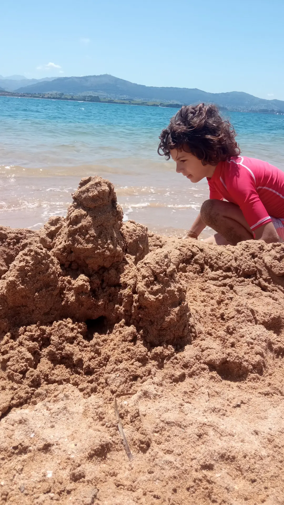

Cómo fomentar el desapego en niños y niñas para potenciar su crecimiento personal, emocional y relacional.
En Coloniales hablamos mucho de libertad, juego, construcción, vínculos… y también de soltar. Porque crecer no es solo acumular experiencias, sino también aprender a dejar ir: un objeto, una etapa, una emoción o incluso a alguien. El desapego en la infancia no significa frialdad o indiferencia. Todo lo contrario: es una forma sana de relacionarse con el mundo desde la confianza, no desde la necesidad. En este artículo te contamos por qué cultivar el desapego en niños y niñas es una herramienta poderosa para su desarrollo integral y cómo, desde nuestro enfoque educativo y vivencial, lo trabajamos en el día a día de nuestros talleres.
¿Qué es el desapego y por qué importa?
Desapegarse no es alejarse, es poder estar cerca sin miedo. En el contexto infantil, el desapego es la capacidad de formar relaciones saludables con personas, objetos, espacios o rutinas, sin depender excesivamente de ellos. Se trata de permitir que cada niño y niña construya su mundo interno sin quedar anclado a lo externo. Lejos de ser una pérdida, el desapego bien acompañado es una ganancia: permite al niño explorar, equivocarse, adaptarse y construir desde la calma. Por eso en Coloniales no hablamos de niños independientes a la fuerza, sino de niños libres de apegos que bloquean su evolución.
Beneficios de trabajar el desapego desde la infancia.
1. Fomenta la autonomía auténtica.
Cuando los niños aprenden a soltar, se abren a tomar decisiones propias, a confiar en sus capacidades y a enfrentarse al mundo desde su criterio y sensibilidad. No necesitan que alguien les diga a cada paso qué hacer. Esa autonomía real es una de las bases de nuestros talleres y juegos en Coloniales.
2. Mejora las relaciones con los demás.
El desapego emocional permite establecer vínculos más sanos, sin dependencias ni miedos ocultos. Los niños que aprenden a no aferrarse, conectan mejor: saben disfrutar de la compañía sin temer la separación. Cultivan relaciones basadas en la empatía, no en la necesidad.
3. Reduce la ansiedad ante los cambios.
Mudanzas, pérdidas, nuevos escenarios… En la infancia, como en la vida, todo cambia. El desapego les da a los niños herramientas para navegar la incertidumbre con más calma. Entienden que lo importante no está solo fuera, sino también dentro.
4. Favorece el crecimiento emocional.
Un niño que puede soltar, también puede sentir con libertad. El desapego potencia la inteligencia emocional: ayuda a identificar emociones, a expresarlas sin quedarse atascado en ellas, y a crecer desde cada experiencia, incluso las difíciles.
El desapego como parte de nuestra pedagogía vivencial
En Coloniales no enseñamos el desapego como teoría: lo vivimos. En cada propuesta, ya sea en una construcción efímera, una estructura que se transforma o una experiencia que se recoge al final del día, está la idea de que nada es permanente, pero todo puede ser significativo.
Trabajamos para que niños y niñas descubran que soltar no es perder, sino avanzar. Que pueden conectar profundamente sin quedar atrapados. Que pueden amar, jugar, construir… y también dejar ir.
#desapegoinfantil #coloniales #educacionvivencial #autonomiainfantil #niñoslibres #pedagogiarespetuosa #crecimientoemocional
← Volver al blog